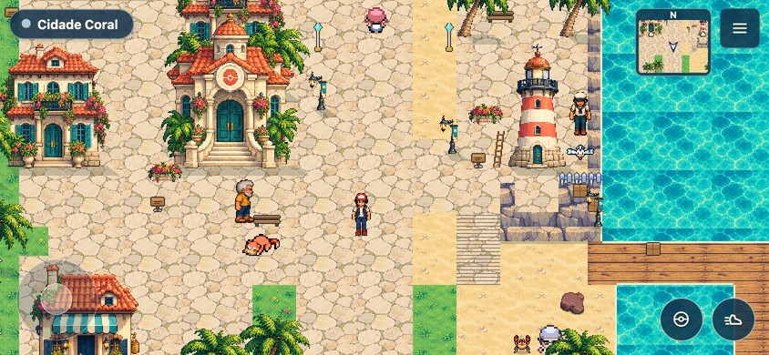
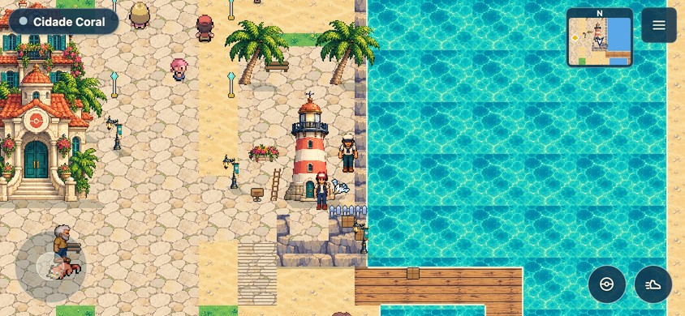

Pokémon Alvorada · amostra local · 25/10/2026
Coral, com outra proporção.
Treinador original, dois moradores e peças costeiras separados, integrados à cidade jogável. Estas são capturas do jogo em 844×390; não são uma ilustração de como ele poderia ficar.
Entrar na amostra jogável

Mesmo ponto da praça, mesma câmera. Botões acima alternam a captura da amostra e a versão publicada.
Trecho junto ao farol. Portas, sólidos e rotinas continuam os mesmos.As mesmas folhas usadas no jogo
Treinador, marinheiro e pescador. As colunas mostram frente, costas, esquerda e direita. As poses são desenhadas em folhas; o código só escolhe o quadro.
A prévia amplia a arte. A corrida usa as mesmas quatro passadas mais rápidas; ainda não há uma sequência exclusiva de corrida.
O que esta amostra resolve: corpo mais alongado e pés alinhados, quatro direções, passos diferentes e dois moradores no mesmo acabamento. O novo conjunto fica atrás de uma opção de teste, sem substituir o visual padrão.
O que falta: demais moradores, personagem feminino e personalização, arremesso e montaria no novo desenho, transições de terreno mais naturais e composição final do bairro. A medição de CPU e heap ainda não passou o critério de não aumentar; esta versão não está pronta para virar padrão.
Relatório, testes e desempenho · Procedência da arte e prompts
Branch amostra-aventura-coral. Não publicada. Os Pokémon conservam os sprites e animações existentes.